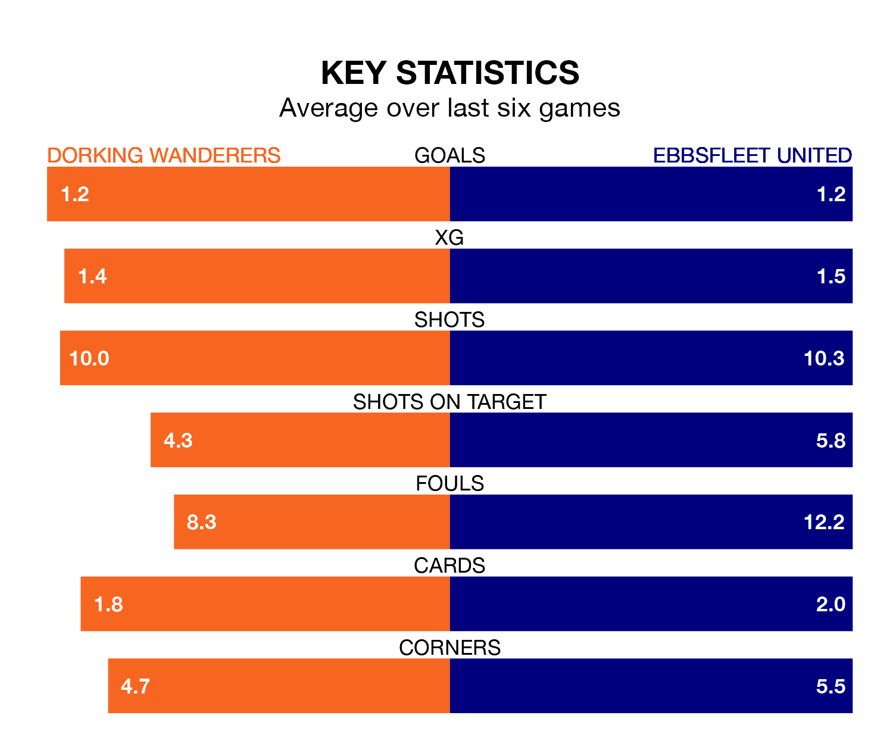

Ebbsfleet United travel to Dorking Wanderers on Saturday in the National League.
The visitors come into the game on the back of a win in their last match, having beaten Woking 1-0 at home, with a goal from Dominic Alfred Poleon.
Wanderers, meanwhile, drew their last match, 0-0 against Kidderminster Harriers.
Dorking are 21st in the table after 33 games, of which they have won 11 and drawn five, earning 38 points.
Ebbsfleet are one place ahead of Wanderers in 20th, with 10 wins and eight draws putting them on the same number of points.
With 38 goals in 33 games so far this season, the hosts are scoring at below the league average rate with 1.2 goals per game. And they are conceding more than average, letting in 53 goals at a rate of 1.6 per game.
United are also below average scorers, with 1.3 goals per game, compared to a league average of 1.5. They have conceded 1.7 goals per game.
In the last five years, Dorking and Ebbsfleet have played each other on five occasions. Dorking won four of them and they drew once.
On average, Wanderers scored 2.4 goals and Ebbsfleet 0.8 in those matches.
Their last meeting was on September 26, when Dorking won 1-0 away.
Dorking are in mixed form in the National League, with two wins and a draw from their last six games.
With three wins and two draws over that period, the away side's form is better – they have taken 11 points from 18, compared to Dorking's seven.
Updated: 10:08 (UTC), 23/02/24